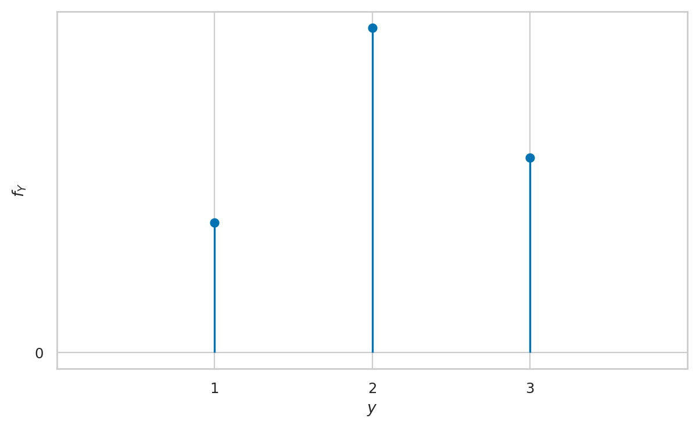
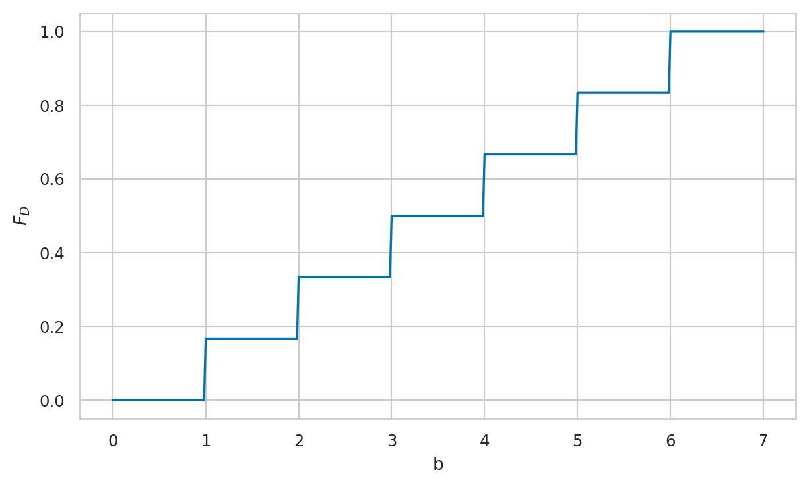

Exercises for Section 2.1 Discrete random variables
Contents
Exercises for Section 2.1 Discrete random variables#
This notebook contains the solutions to the exercises from Section 2.1 Discrete random variables of the No Bullshit Guide to Statistics.
Notebooks setup#
import os
import numpy as np
import pandas as pd
import matplotlib.pyplot as plt
import seaborn as sns
# Pandas setup
pd.set_option("display.precision", 2)
# Figures setup
DESTDIR = "figures/prob" # where to save figures
rcparams = {
'figure.figsize': (7,4),
# 'figure.dpi': 300,
'font.serif': ['Palatino'],
'font.family': 'serif',
# 'font.size': 20,
# 'figure.titlesize': 16,
# 'axes.titlesize':22,
# 'axes.labelsize':20,
# 'xtick.labelsize': 12,
# 'ytick.labelsize': 12,
# 'legend.fontsize': 16,
# 'legend.title_fontsize': 18,
}
sns.set_theme(
context="paper",
style="whitegrid",
palette="colorblind", # ALT sns.color_palette('Blues', 4)
rc=rcparams,
)
%config InlineBackend.figure_format = 'retina'
Python functions defined in the text#
# define the probability mass function for the random variable D
def fD(d):
if d in {1,2,3,4,5,6}:
return 1/6
else:
return 0
import numpy as np
def fH(h):
lam = 20
return lam**h * np.exp(-lam) / np.math.factorial(h)
def FH(b):
return sum([fH(h) for h in range(0,b+1)])
Exercies 1#
E2.1#
sum([fD(d) for d in range(2,5+1)])
0.6666666666666666
E2.2#
# define the probability mass function for the random variable D4
def fD4(d):
if d in {1,2,3,4}:
return 1/4
else:
return 0
[fD4(d) for d in range(1,4+1)]
[0.25, 0.25, 0.25, 0.25]
E2.3#
ys = [1,2,3]
fYs = [0.2, 0.5, 0.3]
fig, ax = plt.subplots()
plt.stem(ys, fYs, basefmt=" ")
ax.set_xticks([1,2,3])
ax.set_xlim(0,4)
ax.set_yticks([0])
ax.set_xlabel('$y$')
ax.set_ylabel('$f_Y$')
Text(0, 0.5, '$f_Y$')
findfont: Generic family 'serif' not found because none of the following families were found: Palatino
findfont: Generic family 'serif' not found because none of the following families were found: Palatino
findfont: Generic family 'serif' not found because none of the following families were found: Palatino
findfont: Generic family 'serif' not found because none of the following families were found: Palatino
findfont: Generic family 'serif' not found because none of the following families were found: Palatino
findfont: Font family ['serif'] not found. Falling back to DejaVu Sans.
findfont: Generic family 'serif' not found because none of the following families were found: Palatino
findfont: Generic family 'serif' not found because none of the following families were found: Palatino
findfont: Generic family 'serif' not found because none of the following families were found: Palatino
findfont: Generic family 'serif' not found because none of the following families were found: Palatino
findfont: Generic family 'serif' not found because none of the following families were found: Palatino
findfont: Generic family 'serif' not found because none of the following families were found: Palatino
findfont: Generic family 'serif' not found because none of the following families were found: Palatino
findfont: Generic family 'serif' not found because none of the following families were found: Palatino
findfont: Generic family 'serif' not found because none of the following families were found: Palatino
findfont: Generic family 'serif' not found because none of the following families were found: Palatino
findfont: Generic family 'serif' not found because none of the following families were found: Palatino
findfont: Generic family 'serif' not found because none of the following families were found: Palatino
findfont: Generic family 'serif' not found because none of the following families were found: Palatino
findfont: Generic family 'serif' not found because none of the following families were found: Palatino
findfont: Generic family 'serif' not found because none of the following families were found: Palatino
findfont: Generic family 'serif' not found because none of the following families were found: Palatino
findfont: Generic family 'serif' not found because none of the following families were found: Palatino
findfont: Generic family 'serif' not found because none of the following families were found: Palatino
findfont: Generic family 'serif' not found because none of the following families were found: Palatino
findfont: Generic family 'serif' not found because none of the following families were found: Palatino
findfont: Generic family 'serif' not found because none of the following families were found: Palatino
findfont: Generic family 'serif' not found because none of the following families were found: Palatino

# fY(1), fY(2), fY(3) are
fYs
[0.2, 0.5, 0.3]
E2.4#
Define \(A\) as the set of outcomes \(\{5,6\}\), which is a subset of the sample space \(\{1,2,3,4,5,6\}\) for the random variable \(D\). The complement of \(A\) is \(A^c= \{1,2,3,4\}\), and we know \( \Pr(A^c)= \frac{4}{6}\). Applying the complement rule, we obtain \(\Pr(A) = 1 - \Pr(A^c) = 1 - \frac{4}{6} = \frac{2}{6}\).
Exercies 2#
E2.5#
FH(30) - FH(10-1)
0.9815299064117703
E2.6#
# define the probability mass function for the random variable D
def fD(d):
if d in {1,2,3,4,5,6}:
return 1/6
else:
return 0
def FD(b):
return sum([fD(d) for d in range(0,b+1)])
FD(1), FD(2), FD(3), FD(4), FD(5), FD(6)
(0.16666666666666666,
0.3333333333333333,
0.5,
0.6666666666666666,
0.8333333333333333,
0.9999999999999999)
E2.7#
from scipy.stats import randint
rvD = randint(1, 6+1)
ds = np.linspace(0, 7, 400)
FDs = rvD.cdf(ds)
ax = sns.lineplot(x=ds, y=FDs)
ax.set_xlabel('b')
ax.set_ylabel('$F_D$')
Text(0, 0.5, '$F_D$')
findfont: Generic family 'serif' not found because none of the following families were found: Palatino
findfont: Generic family 'serif' not found because none of the following families were found: Palatino
findfont: Generic family 'serif' not found because none of the following families were found: Palatino
findfont: Generic family 'serif' not found because none of the following families were found: Palatino
findfont: Generic family 'serif' not found because none of the following families were found: Palatino
findfont: Generic family 'serif' not found because none of the following families were found: Palatino
findfont: Generic family 'serif' not found because none of the following families were found: Palatino
findfont: Generic family 'serif' not found because none of the following families were found: Palatino
findfont: Generic family 'serif' not found because none of the following families were found: Palatino
findfont: Generic family 'serif' not found because none of the following families were found: Palatino
findfont: Generic family 'serif' not found because none of the following families were found: Palatino
findfont: Generic family 'serif' not found because none of the following families were found: Palatino
findfont: Generic family 'serif' not found because none of the following families were found: Palatino
findfont: Generic family 'serif' not found because none of the following families were found: Palatino
findfont: Generic family 'serif' not found because none of the following families were found: Palatino
findfont: Generic family 'serif' not found because none of the following families were found: Palatino
findfont: Generic family 'serif' not found because none of the following families were found: Palatino
findfont: Generic family 'serif' not found because none of the following families were found: Palatino
findfont: Generic family 'serif' not found because none of the following families were found: Palatino
findfont: Generic family 'serif' not found because none of the following families were found: Palatino
findfont: Generic family 'serif' not found because none of the following families were found: Palatino
findfont: Generic family 'serif' not found because none of the following families were found: Palatino
findfont: Generic family 'serif' not found because none of the following families were found: Palatino
findfont: Generic family 'serif' not found because none of the following families were found: Palatino
findfont: Generic family 'serif' not found because none of the following families were found: Palatino
findfont: Generic family 'serif' not found because none of the following families were found: Palatino
findfont: Generic family 'serif' not found because none of the following families were found: Palatino
findfont: Generic family 'serif' not found because none of the following families were found: Palatino
findfont: Generic family 'serif' not found because none of the following families were found: Palatino
findfont: Generic family 'serif' not found because none of the following families were found: Palatino
findfont: Generic family 'serif' not found because none of the following families were found: Palatino
findfont: Generic family 'serif' not found because none of the following families were found: Palatino
findfont: Generic family 'serif' not found because none of the following families were found: Palatino
findfont: Generic family 'serif' not found because none of the following families were found: Palatino
findfont: Generic family 'serif' not found because none of the following families were found: Palatino
findfont: Generic family 'serif' not found because none of the following families were found: Palatino
findfont: Generic family 'serif' not found because none of the following families were found: Palatino
findfont: Generic family 'serif' not found because none of the following families were found: Palatino
findfont: Generic family 'serif' not found because none of the following families were found: Palatino
findfont: Generic family 'serif' not found because none of the following families were found: Palatino
findfont: Generic family 'serif' not found because none of the following families were found: Palatino
findfont: Generic family 'serif' not found because none of the following families were found: Palatino
findfont: Generic family 'serif' not found because none of the following families were found: Palatino
findfont: Generic family 'serif' not found because none of the following families were found: Palatino
findfont: Generic family 'serif' not found because none of the following families were found: Palatino
findfont: Generic family 'serif' not found because none of the following families were found: Palatino
findfont: Generic family 'serif' not found because none of the following families were found: Palatino
findfont: Generic family 'serif' not found because none of the following families were found: Palatino
findfont: Generic family 'serif' not found because none of the following families were found: Palatino
findfont: Generic family 'serif' not found because none of the following families were found: Palatino
findfont: Generic family 'serif' not found because none of the following families were found: Palatino
findfont: Generic family 'serif' not found because none of the following families were found: Palatino
findfont: Generic family 'serif' not found because none of the following families were found: Palatino
findfont: Generic family 'serif' not found because none of the following families were found: Palatino
findfont: Generic family 'serif' not found because none of the following families were found: Palatino
findfont: Generic family 'serif' not found because none of the following families were found: Palatino
findfont: Generic family 'serif' not found because none of the following families were found: Palatino
findfont: Generic family 'serif' not found because none of the following families were found: Palatino
findfont: Generic family 'serif' not found because none of the following families were found: Palatino
findfont: Generic family 'serif' not found because none of the following families were found: Palatino
findfont: Generic family 'serif' not found because none of the following families were found: Palatino
findfont: Generic family 'serif' not found because none of the following families were found: Palatino
findfont: Generic family 'serif' not found because none of the following families were found: Palatino
findfont: Generic family 'serif' not found because none of the following families were found: Palatino
findfont: Generic family 'serif' not found because none of the following families were found: Palatino
findfont: Generic family 'serif' not found because none of the following families were found: Palatino
findfont: Generic family 'serif' not found because none of the following families were found: Palatino
findfont: Generic family 'serif' not found because none of the following families were found: Palatino
findfont: Generic family 'serif' not found because none of the following families were found: Palatino
findfont: Generic family 'serif' not found because none of the following families were found: Palatino
findfont: Generic family 'serif' not found because none of the following families were found: Palatino
findfont: Generic family 'serif' not found because none of the following families were found: Palatino
findfont: Generic family 'serif' not found because none of the following families were found: Palatino
findfont: Generic family 'serif' not found because none of the following families were found: Palatino
findfont: Generic family 'serif' not found because none of the following families were found: Palatino
findfont: Generic family 'serif' not found because none of the following families were found: Palatino
findfont: Generic family 'serif' not found because none of the following families were found: Palatino
findfont: Generic family 'serif' not found because none of the following families were found: Palatino
findfont: Generic family 'serif' not found because none of the following families were found: Palatino
findfont: Generic family 'serif' not found because none of the following families were found: Palatino
findfont: Generic family 'serif' not found because none of the following families were found: Palatino

E2.8#
FH(18), FH(19), FH(20), FH(21), FH(22)
(0.3814219494471548,
0.47025726683924,
0.5590925842313252,
0.6436976484142636,
0.7206113431260257)
E2.9#
FH(16), FH(17), FH(18)
(0.22107420155444096, 0.29702839792467384, 0.3814219494471548)
So \(F_H^{-1}(0.25) = 17\). This is the smallest value \(b\) for which \(F_H(b)\) is greater than \(0.25\).
# ALT. by calling the inverse-CDF function on rvH object
from scipy.stats import poisson
rvH = poisson(20)
rvH.ppf(0.25)
17.0
Exercies 3#
E2.10#
# define the probability mass function for the random variable C
def fC(c):
if c in {"heads", "tails"}:
return 1/2
else:
return 0
def w(c):
if c == "heads":
return 1.90
else:
return 0
sum([w(c) * fC(c) for c in {"heads", "tails"}])
0.95
E2.11#
def u(d):
if d == 6:
return 4
elif d == 5:
return 3
else:
return 0
sum([u(d)*rvD.pmf(d) for d in range(1,6+1)])
1.1666666666666665
E2.12#
See derivation in the book.
E2.13#
def fD20(d):
if d in range(1,20+1):
return 1/20
else:
return 0
# Expected value of the random variable D20
sum([d*fD20(d) for d in range(1,20+1)])
10.5
Exercies 4#
E2.14#
from scipy.stats import randint
rvD = randint(1,6+1)
[rvD.pmf(d) for d in range(1,6+1)]
[0.16666666666666666,
0.16666666666666666,
0.16666666666666666,
0.16666666666666666,
0.16666666666666666,
0.16666666666666666]
sum([rvD.pmf(d) for d in range(1,6+1)])
0.9999999999999999
# F_D(4) =
sum([rvD.pmf(d) for d in range(1,4+1)])
0.6666666666666666
# F_D(4) =
rvD.cdf(4)
0.6666666666666666
# mu = sigma^2 =
rvD.mean(), rvD.var()
(3.5, 2.9166666666666665)
def w(d):
if d == 6:
return 5
else:
return 0
sum([w(d)*rvD.pmf(d) for d in range(1,6+1)])
0.8333333333333333
# Calling:
# rvD.expect(w)
# Raises an error:
# ValueError: The truth value of an array is ambiguous.
# Use a.any() or a.all()
This error occurs because the Python function w chokes
if we pass it an array of inputs to evaluate,
which is what the method rvD.expect does (for efficiency reasons).
We can easily solve this by “vectorizing” the function using the NumPy helper method vectorize, which makes any Python function work with vector inputs (arrays of numbers).
# create a "vectorized" version of the function w
vw = np.vectorize(w)
rvD.expect(vw)
0.8333333333333333
E2.15#
from scipy.stats import randint
rvD20 = randint(1, 20+1)
rvD20.pmf(7)
0.05
sum([rvD20.pmf(d) for d in range(1,4+1)])
0.2
rvD20.cdf(4)
0.2
rvD20.mean(), rvD20.var(), rvD20.std()
(10.5, 33.25, 5.766281297335398)
E2.16#
from scipy.stats import poisson
rvM = poisson(40)
rvM.mean(), rvM.var(), rvM.std()
(40.0, 40.0, 6.324555320336759)
sum([rvM.pmf(m) for m in range(33,44+1)])
0.6503813622782278
rvM.cdf(44) - rvM.cdf(33-1)
0.6503813622782224
rvM.ppf(0.95)
51.0
rvM.rvs(10)
array([37, 45, 39, 46, 49, 49, 40, 35, 42, 29])